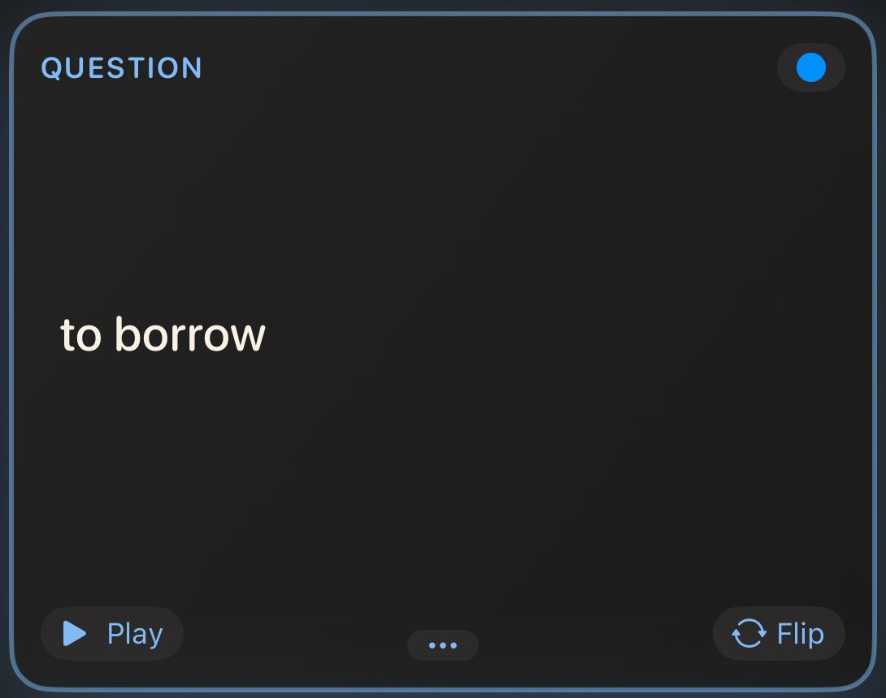
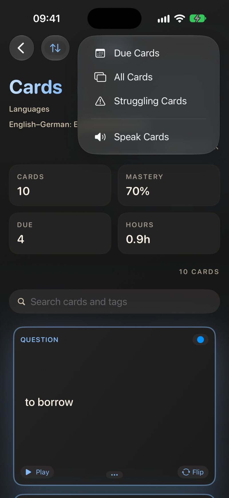
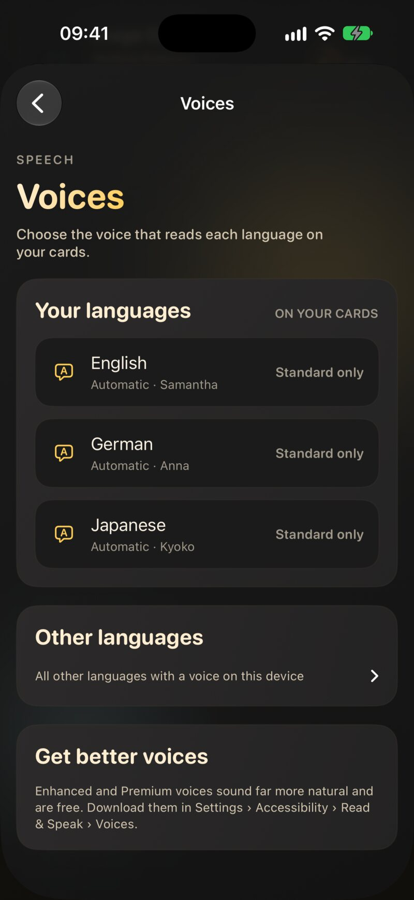
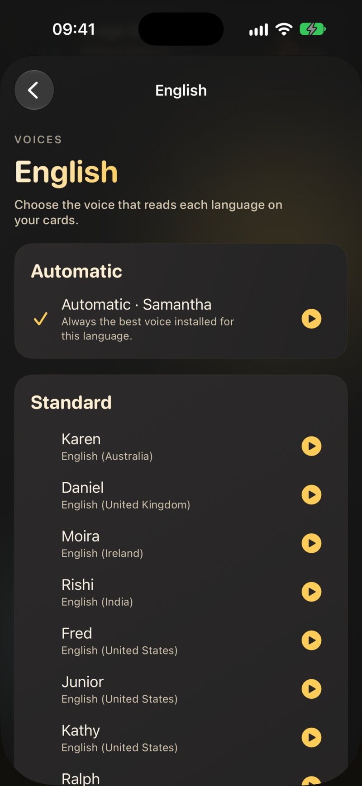

7.1 Todo empieza por el idioma
Antes de leer nada en voz alta, JustFlip! necesita saber en qué idioma está una cara. Cada cara de una tarjeta tiene su propio selector de Idioma en el editor de tarjetas (capítulo 3). La palabra en inglés del anverso recibe una voz inglesa, y su significado en español del reverso, una voz española.
El selector ofrece estos idiomas: inglés, inglés (EE. UU.), inglés (Reino Unido), checo, español, francés, alemán, italiano, portugués, portugués (Brasil), chino (simplificado), chino (tradicional), japonés, coreano, árabe, ruso e hindi.
La primera opción del selector dice Ninguno (predeterminado del sistema), pero detrás no hay ninguna voz predeterminada. Una cara configurada como Ninguno nunca se lee: no tiene botón Reproducir y Leer tarjetas se la salta. Lo mismo ocurre con un idioma que no tiene ninguna voz instalada en tu dispositivo. Cuando una tarjeta se queda muda, revisa primero su idioma.
Un mazo que importas (capítulo 5) trae los idiomas fijados en el archivo. Si todo un mazo importado está mudo, lo más probable es que sus tarjetas llegaran sin idioma. Pon el idioma de cada cara en el editor de tarjetas.
7.2 El botón Reproducir
Siempre que una cara tiene texto y una voz para su idioma, aparece un pequeño botón Reproducir en la esquina inferior izquierda de la tarjeta. Tócalo para oír esa cara. Mientras habla se convierte en Detener, así que vuelve a tocarlo para pararlo. El botón aparece en las tarjetas de la lista de tarjetas y durante un repaso. Es gratis.

Si la cara tiene además un archivo de sonido (capítulo 4), aparece un botón Audio junto al botón Reproducir. Son independientes: Reproducir lee el texto con una voz sintética, y Audio reproduce el archivo de sonido. Al poner uno se para el otro.
7.3 Leer tarjetas (Pro)
Leer tarjetas te lee un mazo de principio a fin, sin necesidad de usar las manos. Abre un mazo, toca el botón de reproducción de arriba de la lista de tarjetas y elige Leer tarjetas. Para empezar a mitad, mantén pulsada una tarjeta y elige Leer desde aquí.

Con cada tarjeta, JustFlip!:
- lee la pregunta,
- espera cuatro segundos, tu momento para responder mentalmente,
- lee la respuesta,
- hace sonar un breve tono, y pasa a la siguiente tarjeta.
Mientras suena, la lista de tarjetas va siguiendo la lectura. La tarjeta que se está leyendo se voltea a su respuesta durante la fase de respuesta y vuelve a girarse después. El botón de reproducción de arriba se convierte en un botón de parada (Dejar de leer tarjetas). Tócalo para terminar la sesión.
Leer tarjetas lee las tarjetas en el orden en que las muestra la lista. Usa el menú de ordenación (Orden original, Alfabéticamente, Por progreso, Por urgencia o Mezclar) antes de empezar para cambiar lo que oyes primero. La voz habla a la velocidad estándar del sistema. No hay ajustes para la pausa, la velocidad ni la cara que se lee: cada tarjeta se lee siempre con la pregunta primero y luego la respuesta.
Leer tarjetas es una forma de empaparte de un mazo, no una prueba. No se evalúa nada, tu programación no cambia y la sesión no cuenta para tu racha ni para las estadísticas. Los seguimientos de progreso se omiten. Úsalo junto a tus repasos, no en lugar de ellos.
7.3.1 Qué tarjetas se leen
Una tarjeta solo se lee cuando las dos caras se pueden leer: cada una tiene texto, y cada una tiene un idioma con una voz instalada. Las demás tarjetas se saltan sin decir nada, y la sesión continúa. Si ninguna tarjeta del mazo cumple los requisitos, JustFlip! te avisa: No hay tarjetas con audio disponible. Ambas caras necesitan texto y un idioma de síntesis de voz compatible.
Leer tarjetas lee texto. No reproduce los archivos de sonido de una tarjeta, y una imagen no dice nada salvo que le hayas dado una pista hablada (capítulo 3). Una tarjeta cuya respuesta es solo una imagen o un sonido no tiene texto que leer, así que se salta la tarjeta entera.
7.3.2 Pro y gratis
Leer tarjetas y la escucha en segundo plano forman parte de JustFlip! Pro. Sin Pro, Leer tarjetas y Leer desde aquí siguen apareciendo, con un candado, y al tocarlos se abre la pantalla de Pro. El botón Reproducir de una tarjeta y la elección de voces en Ajustes son gratis para todo el mundo.
7.4 Escuchar con la pantalla bloqueada
Cuando Leer tarjetas está sonando, puedes bloquear el iPhone o cambiar a otra app. La lectura continúa en segundo plano, con pausas y tonos incluidos, así que el teléfono puede quedarse en tu bolsillo.
Cuando otra cosa se hace con el audio, como una llamada, una alarma u otra app que empieza a reproducir, la sesión se detiene. No se reanuda cuando acaba la llamada. Abre el mazo y elige Leer desde aquí en la tarjeta donde lo dejaste.
No hay controles de reproducción y pausa en la pantalla bloqueada ni en el Centro de control. Para parar, abre JustFlip! y toca el botón de parada de la lista de tarjetas.
JustFlip! incluye también una actividad en directo que muestra la tarjeta que se está leyendo en la pantalla bloqueada y en la Dynamic Island. En la versión actual está desactivada mientras se hacen fiables sus actualizaciones, y volverá en una actualización. La escucha en segundo plano funciona sin ella.
7.5 Elegir voces
Ve a Ajustes › Voz › Voces. JustFlip! elige una voz para cada idioma por separado. El subtítulo de la fila resume tus elecciones, por ejemplo «Inglés: Automática · Alemán: Anna».

La pantalla tiene dos listas:
- Tus idiomas: los idiomas configurados en tus tarjetas. Cada fila muestra la voz que realmente hablará.
- Otros idiomas: todos los demás idiomas con alguna voz en este dispositivo, plegados hasta que los necesites.
Un idioma cuya mejor voz instalada es de calidad básica se marca como Solo estándar. Es la señal para descargar una mejor (consulta Conseguir mejores voces).
Toca un idioma para ver sus voces:
- Automática, arriba, junto con la voz que elige en ese momento.
- Todas las voces instaladas para ese idioma, agrupadas en Premium, Mejorada y Estándar.
Una marca de verificación indica tu elección. Cada fila tiene un pequeño botón de reproducción para escuchar antes una muestra. La muestra es una cara al azar de tus propias tarjetas en ese idioma, así que oyes lo que la voz leerá de verdad. Si ninguna de tus tarjetas usa todavía ese idioma, la voz se presenta con su nombre y su idioma. Vuelve a tocar el botón para pararla.

7.5.1 Qué elige Automática
Automática siempre coge la mejor voz instalada para el idioma: primero Premium, luego Mejorada y luego Estándar. Cuando varias voces comparten la mejor calidad, prefiere la que usa el propio iOS para ese idioma, después una voz de tu región (una voz de español de España en un iPhone de España) y deja para el final las voces Eloquence, de sonido retro. Descarga una voz mejor y Automática empieza a usarla al momento, sin cambiar nada en JustFlip!.
Automática va mejorando a medida que instalas voces. Elige una voz concreta solo cuando tengas una favorita clara, como un acento en particular.
La voz que eliges para el checo lee las caras en checo, y solo esas. Nunca lee la cara en inglés de la misma tarjeta. Esa cara usa lo que elegiste para el inglés. La elección se hace por idioma, no por variante, así que una voz británica elegida para el inglés también lee las caras configuradas como inglés (EE. UU.). Si eliminas de tu dispositivo una voz elegida, ese idioma vuelve discretamente a Automática.
Las voces de broma (Albert, Bahh, Bells y compañía) y tu Voz personal nunca se ofrecen, y Automática nunca las elige. Las voces de broma son malas profesoras, y tu Voz personal sigue siendo tuya.
7.6 Conseguir mejores voces
Las voces que vienen con iOS cumplen, pero las voces mejoradas y premium suenan mucho más naturales, y son gratis. En el iPhone y el iPad, descárgalas en la app Ajustes del sistema:
Ajustes › Accesibilidad › Lectura y voz › Voces
Elige un idioma, luego una voz, y tócala para descargarla. Las voces premium son archivos más grandes, así que usa la wifi. Cuando termine la descarga, vuelve a JustFlip!. La nueva voz aparece en Ajustes › Voz › Voces y Automática la adopta al instante. JustFlip! no puede abrirte esa página de ajustes, por eso la pantalla Voces detalla la ruta en Consigue mejores voces.
7.7 Las tarjetas de huecos en voz alta
Una tarjeta de huecos (capítulo 3) no debe delatar su propia respuesta, así que su pregunta se lee sustituyendo cada hueco:
- por las palabras «espacio en blanco» en el idioma de la tarjeta: «blank» en inglés, «Lücke» en alemán, «espacio en blanco» en español, «prázdné místo» en checo, etc.;
- o por la pista, si el hueco la tiene:
{{c1::París::ciudad}}se lee como «ciudad».
La capital de Francia
es {{c1::París}}.La capital de Francia es […].
La voz dice “La capital de Francia es espacio en blanco.”
En la cara de la respuesta, se lee la frase entera con los huecos rellenos. En Leer tarjetas, la fase de respuesta lee la frase revelada y luego las notas adicionales de la cara de la respuesta.
La respuesta de una tarjeta de huecos vive dentro de su pregunta, así que Leer tarjetas lee la fase de respuesta, notas incluidas, con el idioma y la voz de la cara de la pregunta. Que la cara de la respuesta esté configurada en otro idioma no cambia nada. Escribe las notas de una tarjeta de huecos en el mismo idioma que la frase.
7.8 Que las tarjetas suenen bien
Cuando la voz tropieza con una abreviatura, un símbolo o una fórmula,
una pista hablada le dice qué decir en su lugar:
[iOS]{ai ou ese}, $c^2${c al cuadrado}. Las
pistas funcionan exactamente en cuatro sitios, y en cualquier otro las
llaves se muestran en la tarjeta. El capítulo 3 las explica a fondo, en
la sección Dile a la voz qué decir.
Todo lo de este capítulo usa tus pistas: el botón Reproducir, Leer tarjetas y las muestras de voz.
7.9 Cuando una tarjeta se queda muda
| Síntoma | Causa probable | Solución |
|---|---|---|
| Una cara no tiene botón Reproducir | la cara no tiene idioma, o no tiene texto | configura el Idioma de la cara en el editor de tarjetas |
| No hay botón Reproducir, pero el idioma está configurado | no hay ninguna voz instalada para él | descarga una en Ajustes de iOS › Accesibilidad › Lectura y voz › Voces |
| Leer tarjetas se salta una tarjeta | una de las caras no se puede leer | dale texto e idioma a las dos caras |
| Leer tarjetas está bloqueado | es una función Pro | el botón Reproducir de cada tarjeta sigue siendo gratis |
| El acento no es el que quieres | Automática eligió otra variante | elige una voz en Ajustes › Voz › Voces |
| La escucha se paró sola | una llamada u otra app se hizo con el audio | vuelve a empezar con Leer desde aquí |
| Un hueco se lee como «espacio en blanco» | es así a propósito | añade una pista, {{c1::…::hint}}, para oír la pista en
su lugar |